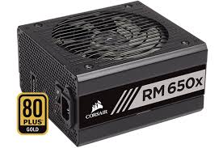
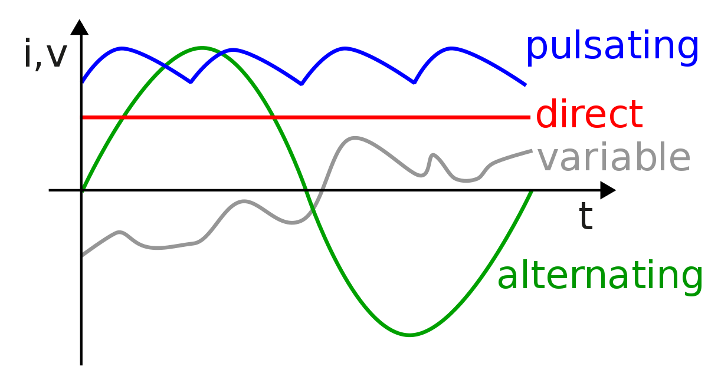

 The power supply unit, more commonly known as the PSU, (shown in figure 1.1) is the most important power source for your PC. It converts AC from outlets to low-voltage DC for use by the computer (figure 1.2). An analogy is that the power supply unit is like your stomach, you cannot directly use an apple as fuel, your stomach needs to convert it into the required nutrients that your body then uses as fuel. In addition, your PC often does not require the same amount of voltage as the AC coming out of your outlet; the PSU lowers the voltage to ensure that they are compatible. Most outlets have a voltage of 120-240, however, most PCs need 3.3V, 5V, or 12V. Because of these conversions, it is occasionally known as electrical power converters.
Figure 1.1: PSU [Digital image]. (n.d.). Retrieved from https://www.scan.co.uk/images/infopages/corsair_psu/rmx/650x2018.png
Figure 1.2:There are 4 types of electrical current; alternating (AC), direct (DC), pulsating, variable. Electricity in outlets come in the form of AC, while PC's can only support DC currents. Pulsed DC [Digital image]. (n.d.). Retrieved from https://upload.wikimedia.org/wikipedia/commons/thumb/3/38/Types_of_current.svg/1200px-Types_of_current.svg.png
There are 4 stages in converting high voltage AC to low DC. Step one is the transformer only; it convers high AC voltage to low AC voltage. The next step is the rectifying. The output is an unstable DC current, suitable for some household items such as lamps, heaters, and other appliance that include a smoothing capacitor. The third step is smoothing. Although this smooth low voltage is usable, there is still a 10% ripple, therefore, making it not ideal. Finally, regulations makes it so that the current is very smooth, with no ripples. This is often the Zener diode regulator. All appliances can use this, including your PC!